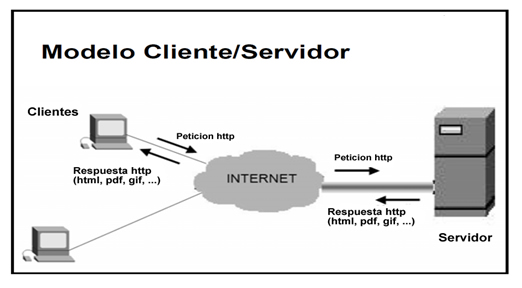

La arquitectura cliente/servidor es un modelo de diseño de software en el que
las tareas de reparten entre los proveedores de recursos o servicios, llamados servidores,
y los demandantes, llamados clientes. Un cliente realiza peticiones a otro programa, el servidor,
quien le da respuesta.

Fig.1 -Arquitectura cliente/servidor
Características
En la arquitectura C/S sus caracteristicas generales son:
El Cliente y el Servidor pueden actuar como una sola entidad y también pueden actuar como entidades separadas,
realizando actividades o tareas independientes.
Las funciones de Cliente y Servidor pueden estar en plataformas separadas, o en la misma plataforma.
Cada plataforma puede ser escalable independientemente. Los cambios realizados en las plataformas de los
Clientes o de los Servidores, ya sean por actualización o por reemplazo tecnológico, se realizan de una manera
transparente para el usuario final.
La interrelación entre el hardware y el software están basados en una infraestructura poderosa, de tal forma
que el acceso a los recursos de la red no muestra la complejidad de los diferentes tipos de formatos de datos y de los protocolos.
Su representación típica es un centro de trabajo (PC), en donde el usuario dispone de sus propias aplicaciones de oficina y sus propias bases de datos,
sin dependencia directa del sistema central de información de la organización.